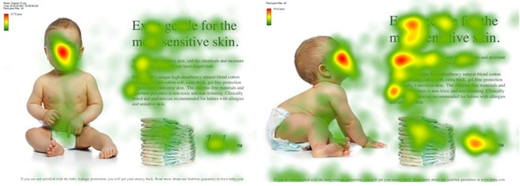

Usos
Investigación de Mercado
El eye tracking es muy popular en la investigación de mercados, ya que ofrece información detallada e imparcial sobre el comportamiento de los consumidores y los procesos de toma de decisiones.
Además, permite que los investigadores analicen el proceso que los consumidores realizan para elegir un producto, mostrando qué elementos atrajeron naturalmente su atención y qué ignoraron.
El eye tracking detalla el comportamiento auténtico del consumidor, lo cual es útil para el diseño de la publicidad, la marca, el empaquetado y la colocación del producto en el establecimiento.
Experiencia del usuario
No hay una mejor manera de probar la experiencia del usuario que verla a través de sus ojos.
El eye tracking puede ejecutarse para estudiar la forma en que se utilizan las plataformas y los servicios y la eficacia para cumplir sus objetivos.
El seguimiento ocular puede revelar defectos de diseño e incluso métodos de uso que pueden no haber sido evidentes en el proceso creativo.
Conoce más de las características de la investigación de la experiencia de usuario.
Investigación científica
Al estudiar el comportamiento visual es posible obtener información valiosa sobre el desarrollo, los patrones de aprendizaje o enfermedad cognitiva.
Generalmente, este método de investigación puede utilizarse en personas que tienen padecimientos como Alzheimer, Parkinson, esquizofrenia, autismo, depresión, etc.
Del mismo modo, la dislexia y otras dificultades de lectura o aprendizaje pueden identificarse y estudiarse mediante el seguimiento ocular.
Aquí más de las características de la investigación científica.
Recursos Humanos
El eye tracking ofrece una imagen valiosa de los procesos implementados en una organización.
Este método es utilizado por las empresas para identificar los riesgos, las ineficiencias operacionales y para racionalizar la capacitación, lo cual permite ahorrar tiempo y mejorar la productividad.
El eye tracking ofrece una visión única de las acciones que se llevan a cabo rápidamente y a menudo de manera subconsciente, que puede ser estudiada y convertida en material para capacitar a los empleados.

Ventajas del eye tracking
Entre los beneficios más importantes del eye tracking se encuentra su capacidad para registrar y analizar de forma detallada y objetiva el comportamiento visual.
Sería imposible pedirle a alguien que escudriñe los pasillos de un supermercado que recuerde, y mucho menos que cuantifique, la cantidad de tiempo que pasó mirando cada artículo, o incluso exactamente dónde miró o qué anuncios notó más.
El eye tracking tiene otros grandes beneficios para una investigación. A continuación, te mencionamos cada uno de ellos:
Revela el comportamiento subconsciente: Los investigadores pueden obtener información sobre los comportamientos que llevamos a cabo instintivamente.
Proporciona datos imparciales, objetivos y cuantificables: Elimina la necesidad de intentar recordar o explicar dónde se miró y evita que los participantes del estudio asuman detalles y den información incorrecta.
Permite un comportamiento natural: Los rastreadores oculares son discretos y permiten que las tareas se lleven a cabo con normalidad.
Es versátil y móvil: Puede ser usado en casi cualquier entorno y escenario.
Proporciona un alto nivel de detalle: Dependiendo del dispositivo y el software, los resultados pueden ofrecer un nivel muy alto de granularidad para un análisis profundo.
Ofrece información en tiempo real: Con la transmisión en vivo se puede ver la mirada de la persona inmediatamente.
Es explicativo: Puede representar procesos y acciones que son difíciles de articular o explicar.
Otorga una visualización gráfica: Utiliza mapas de calor y gráficos que muestran los resultados del eye tracking y permite visualizar la interacción de las personas en un entorno y su respuesta a diferentes estímulos.
Añade valor a otros datos biométricos: El eye tracking puede mejorar el uso de estos dispositivos al proporcionar información adicional sobre lo que condujo a las respuestas fisiológicas.
Tipos de eye tracking
A continuación, tenemos los diferentes tipos de eye tracking existentes. Los investigadores pueden elegir el ideal, según los objetivos de su investigación:
Tipos de eye tracking
Registros en pantalla Estos son dispositivos remotos que se pueden conectar a un ordenador portátil o a un monitor.
Transportables Estos incluyen gafas de rastreo ocular y auriculares de realidad virtual con rastreo ocular integrado.
Webcam No tienen sensores ni cámaras especializadas, están compuestos únicamente por el dispositivo conectado o incorporado a una computadora.
Más informacion clickando en este enlace :
https://www.nosolousabilidad.com/articulos/eye-tracking.htm